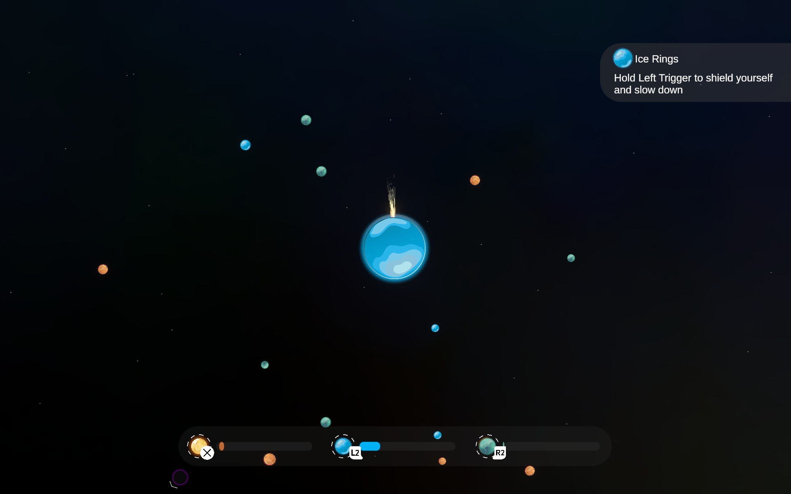
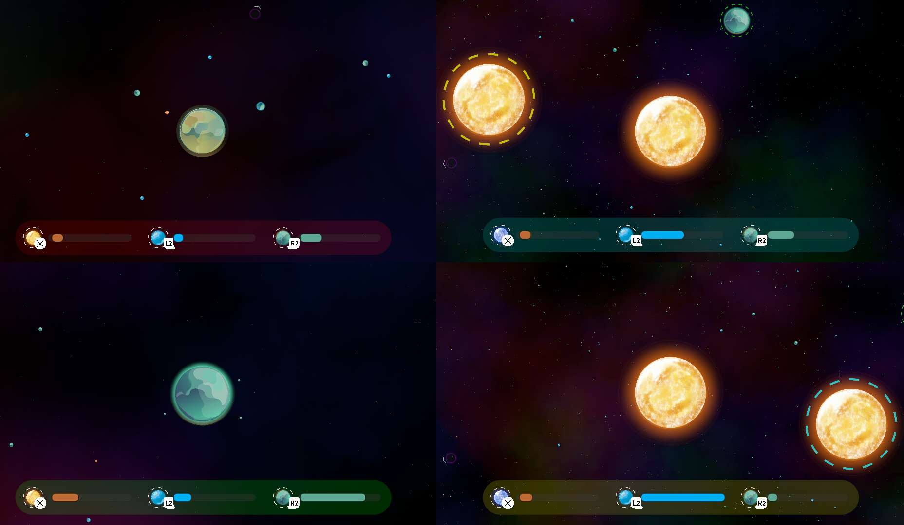

Convergence is a real-time gravity simulation game where thousands of particles interact dynamically. When two particles collide, the larger absorbs the smaller, increasing its mass. Planets contain elements that grant players special abilities, such as Ice Shielding and Gas Propelling. The game supports both single-player and local multiplayer (up to four players) with full console controller integration. In Spring 2024, I pitched this concept and led a team of four peers to develop it over 10 weeks as a Pitch-Project through UCI’s Video Game Development Club.
Convergence
Physics-Based Gravity Survival Game
Visit The Itch.io Page To Download


Design & Development
(REPLACE ME)
Community Response
(REPLACE ME)